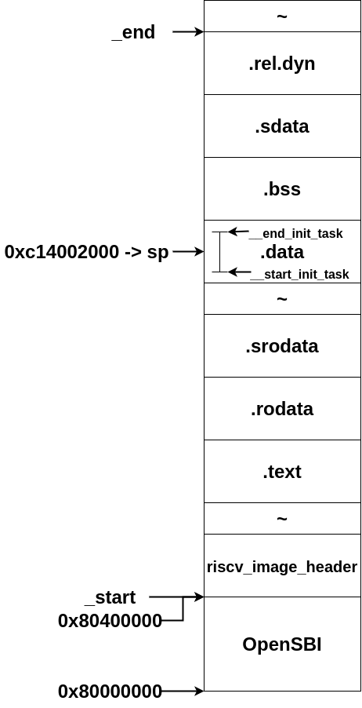

RISC-V portsのLinux Kernelを読んでいく。 自作のRISC-V SoC向けに移植をすることを目標としている。
Boot loader(OpenSBI)によるLinuxのロード・実行
OpenSBIのFW_PAYLOADとして、Linux kernelをロードし、制御を移すこととする。 また、SoCの情報はDevice Treeとして記述し、FDT(Flatten Device Tree)としてOpenSBIより引き渡す。
以下に、OpenSBIからLinuxをブートする際のメモリマップの概略図を示す。
0x80400000にLinux Kernelが配置されている。
OpenSBIはa0レジスタにmhartid、a1レジスタにFDT PAが格納されている。
以下のトラップはS-modeへdelegationされているので、Linuxによりハンドルされる。
- Supervisor Software Interrput
- Supervisor Timer Interrput
- Supervisor External Interrput
- Environment Call From U Mode
- Instruction Address Misaligned
- Environment breakpoint
- Instruction Page Fault
- Load Page Fault
- Store AMO Page Fault
それ以外のトラップはOpenSBI(M-mode)によりハンドルされる。
また、early stageでは、SBIコールを用いてコンソール入出力を行う(earlycon=sbi)。
Linux kernel entrypoint
linker script
linker scriptはarch/riscv/kernel/vmlinux.lds.Sである。
マクロはinclude/asm-generic/vmlinux.lds.hを参照。
#define LOAD_OFFSET PAGE_OFFSET
#include <asm/vmlinux.lds.h>
#include <asm/page.h>
#include <asm/cache.h>
#include <asm/thread_info.h>
#include <asm/set_memory.h>
#include <linux/sizes.h>
OUTPUT_ARCH(riscv)
ENTRY(_start)
jiffies = jiffies_64;
SECTIONS
{
/* Beginning of code and text segment */
. = LOAD_OFFSET;
_start = .;
HEAD_TEXT_SECTION
. = ALIGN(PAGE_SIZE);
__init_begin = .;
INIT_TEXT_SECTION(PAGE_SIZE)
. = ALIGN(8);
__soc_early_init_table : {
__soc_early_init_table_start = .;
KEEP(*(__soc_early_init_table))
__soc_early_init_table_end = .;
}
__soc_builtin_dtb_table : {
__soc_builtin_dtb_table_start = .;
KEEP(*(__soc_builtin_dtb_table))
__soc_builtin_dtb_table_end = .;
}
/* we have to discard exit text and such at runtime, not link time */
.exit.text :
{
EXIT_TEXT
}
.exit.data :
{
EXIT_DATA
}
PERCPU_SECTION(L1_CACHE_BYTES)
__init_end = .;
. = ALIGN(SECTION_ALIGN);
.text : {
_text = .;
_stext = .;
TEXT_TEXT
SCHED_TEXT
CPUIDLE_TEXT
LOCK_TEXT
KPROBES_TEXT
ENTRY_TEXT
IRQENTRY_TEXT
SOFTIRQENTRY_TEXT
*(.fixup)
_etext = .;
}
INIT_DATA_SECTION(16)
/* Start of data section */
_sdata = .;
RO_DATA(SECTION_ALIGN)
.srodata : {
*(.srodata*)
}
EXCEPTION_TABLE(0x10)
. = ALIGN(SECTION_ALIGN);
_data = .;
RW_DATA(L1_CACHE_BYTES, PAGE_SIZE, THREAD_SIZE)
.sdata : {
__global_pointer$ = . + 0x800;
*(.sdata*)
/* End of data section */
_edata = .;
}
BSS_SECTION(PAGE_SIZE, PAGE_SIZE, 0)
.rel.dyn : {
*(.rel.dyn*)
}
_end = .;
STABS_DEBUG
DWARF_DEBUG
DISCARDS
}
エントリーポイント
Linux kernelのエントリーポイントはarch/riscv/kernel/head.Sの_startシンボルである。
arch/riscv/kernel/head.S
__HEAD
ENTRY(_start)
/*
* Image header expected by Linux boot-loaders. The image header data
* structure is described in asm/image.h.
* Do not modify it without modifying the structure and all bootloaders
* that expects this header format!!
*/
/* jump to start kernel */
j _start_kernel
/* reserved */
.word 0
.balign 8
#if __riscv_xlen == 64
/* Image load offset(2MB) from start of RAM */
.dword 0x200000
#else
/* Image load offset(4MB) from start of RAM */
.dword 0x400000
#endif
/* Effective size of kernel image */
.dword _end - _start
.dword __HEAD_FLAGS
.word RISCV_HEADER_VERSION
.word 0
.dword 0
.ascii RISCV_IMAGE_MAGIC
.balign 4
.ascii RISCV_IMAGE_MAGIC2
.word 0
なお、_startシンボルの実体はriscv_image_header構造体である。
arch/riscv/include/asm/image.h
struct riscv_image_header {
u32 code0;
u32 code1;
u64 text_offset;
u64 image_size;
u64 flags;
u32 version;
u32 res1;
u64 res2;
u64 magic;
u32 magic2;
u32 res3;
};
code0、code1はRISC-Vの命令となっており、code0は(j _start_kernel)となっている。
また、riscv_image_headerのmagicナンバーは以下のようになっている。
#define RISCV_IMAGE_MAGIC "RISCV\0\0\0"
#define RISCV_IMAGE_MAGIC2 "RSC\x05"
_start_kernel
次に、_start_kernelを読んでいく。
arch/riscv/kernel/head.S
__INIT
ENTRY(_start_kernel)
/* Mask all interrupts */
csrw CSR_IE, zero
csrw CSR_IP, zero
#ifdef CONFIG_RISCV_M_MODE
...
#endif /* CONFIG_RISCV_M_MODE */
/* Load the global pointer */
.option push
.option norelax
la gp, __global_pointer$
.option pop
/*
* Disable FPU to detect illegal usage of
* floating point in kernel space
*/
li t0, SR_FS
csrc CSR_STATUS, t0
#ifdef CONFIG_SMP
...
#endif
割込みをクリア
OpenSBIを用いているため、CONFIG_RISCV_M_MODEはdefineしていないので、スキップする。
global pointerの設定
gpに__global_pointer$をロードするときはlinker relaxationを無効にする。
FPUを無効にする。
今回はシングルコアなので、CONFIG_SMPはdefineしていないのでスキップ。
/* Pick one hart to run the main boot sequence */
la a3, hart_lottery
li a2, 1
amoadd.w a3, a2, (a3)
bnez a3, .Lsecondary_start
/* Clear BSS for flat non-ELF images */
la a3, __bss_start
la a4, __bss_stop
ble a4, a3, clear_bss_done
clear_bss:
REG_S zero, (a3)
add a3, a3, RISCV_SZPTR
blt a3, a4, clear_bss
clear_bss_done:
/* Save hart ID and DTB physical address */
mv s0, a0
mv s1, a1
la a2, boot_cpu_hartid
REG_S a0, (a2)
/* Initialize page tables and relocate to virtual addresses */
la sp, init_thread_union + THREAD_SIZE
mv a0, s1
call setup_vm
#ifdef CONFIG_MMU
la a0, early_pg_dir
call relocate
#endif /* CONFIG_MMU */
Boot hartの選定
hart_lotteryを使ってlotteryを行い、boot hartを決定する。
bssのゼロクリア
次に__bss_startから__bss_stopまでを0クリアする。
これは、Linker script上のマクロ関数BSS_SECTIONを展開すると発見できる。
それぞれ、.bssセクションの先頭と最後のアドレスである。
ブートローダーからの情報の保存
次に、前段のブートローダーから受けた、mhartid(a0)とFDT PA(a1)を保存する。
boot_cpu_hartidにboot hartのmhartidを保存する。
page tableの初期化
まず、spを初期化する。
THREAD_SIZEはarch/riscv/include/asm/thread_info.hに定義がある。
/* thread information allocation */
#ifdef CONFIG_64BIT
#define THREAD_SIZE_ORDER (2)
#else
#define THREAD_SIZE_ORDER (1)
#endif
#define THREAD_SIZE (PAGE_SIZE << THREAD_SIZE_ORDER)
PAGE_SIZEはarch/riscv/include/asm/page.hに定義がある。
#define PAGE_SHIFT (12)
#define PAGE_SIZE (_AC(1, UL) << PAGE_SHIFT)
#define PAGE_MASK (~(PAGE_SIZE - 1))
つまり、THREAD_SIZEはRV32の場合、8192((0x1«12)«1)になる。
init_thread_unionはlinker scriptのRW_DATA内のINIT_TASK_DATAにより定義される。
定義をたどるのがめんどいので、arch/riscv/kernel/vmlinux.lds.Sを事前にpreprocess(arch/riscv/kernel/vmlinux.lds)したものを用意した。
arch/riscv/kernel/vmlinux.lds
_data = .;
. = ALIGN((1 << (12))); .data : AT(ADDR(.data) - 0xC0000000) { . = ALIGN(((1 << (12)) << (1))); __start_init_task = .; init_thread_union = .; init_stack = .; KEEP(*(.data..init_task)) KEEP(*(.data..init_thread_info)) . = __start_init_task + ((1 << (12)) << (1)); __end_init_task = .; . = ALIGN((1 << (12))); __nosave_begin = .; *(.data..nosave) . = ALIGN((1 << (12))); __nosave_end = .; . = ALIGN((1 << (12))); *(.data..page_aligned) . = ALIGN((1 << (12))); . = ALIGN((1 << 6)); *(.data..cacheline_aligned) . = ALIGN((1 << 6)); *(.data..read_mostly) . = ALIGN((1 << 6)); *(.xiptext) *(.data) *(.ref.data) *(.data..shared_aligned) *(.data.unlikely) __start_once = .; *(.data.once) __end_once = .; . = ALIGN(32); *(__tracepoints) . = ALIGN(8); __start___dyndbg = .; KEEP(*(__dyndbg)) __stop___dyndbg = .; CONSTRUCTORS } . = ALIGN(8); __bug_table : AT(ADDR(__bug_table) - 0xC0000000) { __start___bug_table = .; KEEP(*(__bug_table)) __stop___bug_table = .; }
さらに面倒くさいので、kernelをnmして探す。
$ nm vmlinux|grep init_thread_union
c1400000 D init_thread_union
init_thread_unionのアドレスは、0xc1400000である(Link Address)。
つまり、spは(0xc1400000 + 8192 = 0xc14002000)(Link Address)となる。
ちなみに、init_thread_unionはinclude/linux/sched.hて定義されている。
include/linux/sched.h
union thread_union {
#ifndef CONFIG_ARCH_TASK_STRUCT_ON_STACK
struct task_struct task;
#endif
#ifndef CONFIG_THREAD_INFO_IN_TASK
struct thread_info thread_info;
#endif
unsigned long stack[THREAD_SIZE/sizeof(long)];
};
つまり、スタックか、thread_info構造体、task_structと共用でメモリ領域を使用する。
今回の場合はスタックである。サイズはTHREAD_SIZEwordsなので、THREAD_SIZEをinit_thread_unionに加算することで、スタックの高位アドレスがわかる。
OpenSBIのロードアドレスは0x80000000である。
Linux kernelのOpenSBIからのロードオフセットは0x00400000である。
Linux kernelの開始のロードアドレスは0x80400000である。
Linux kernelの開始のリンクアドレスは0xc0000000である。
スタックのロードアドレスは0x81802000となる。(0x80400000 + 0xc14002000 - 0xc0000000)

第一引数(a0)にFDT PAをセットして、setup_vm関数を呼ぶ。
長くなってきたので、setup_vmは次回にする。